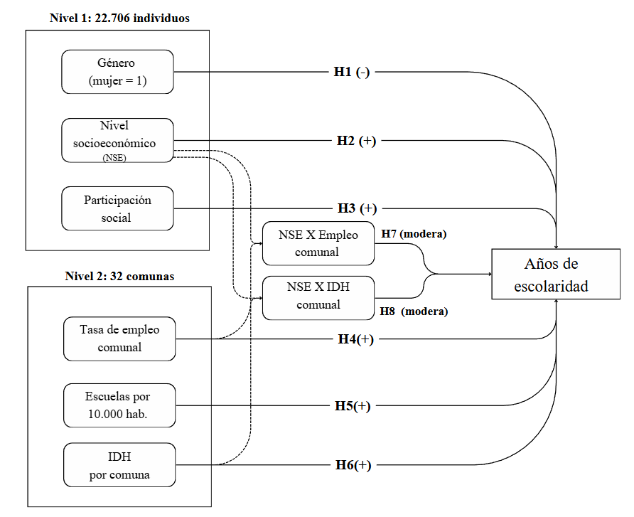
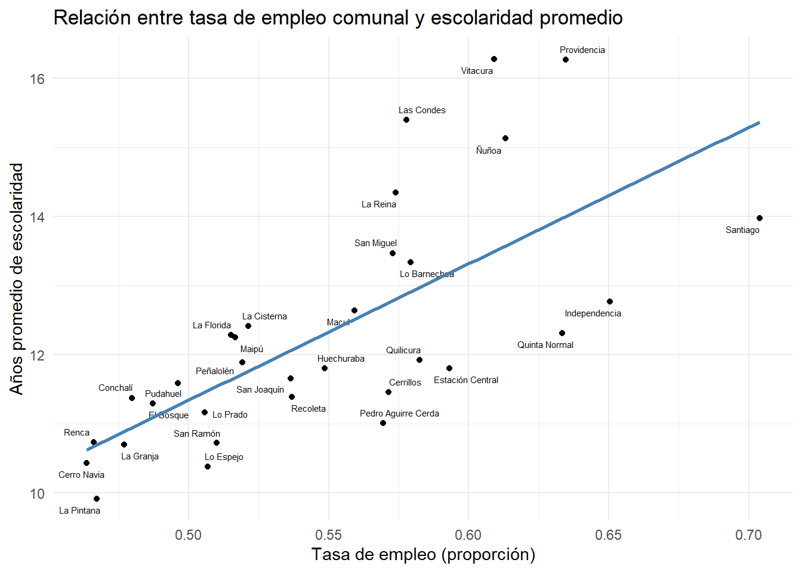
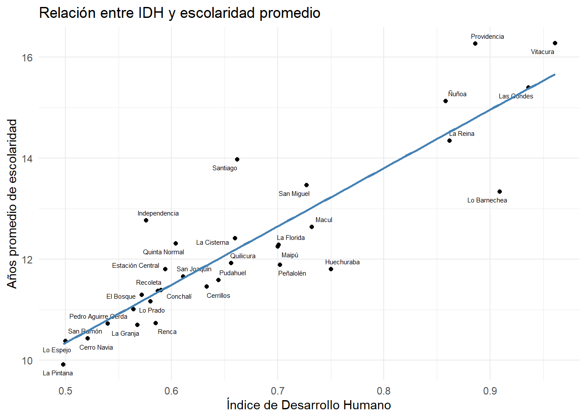
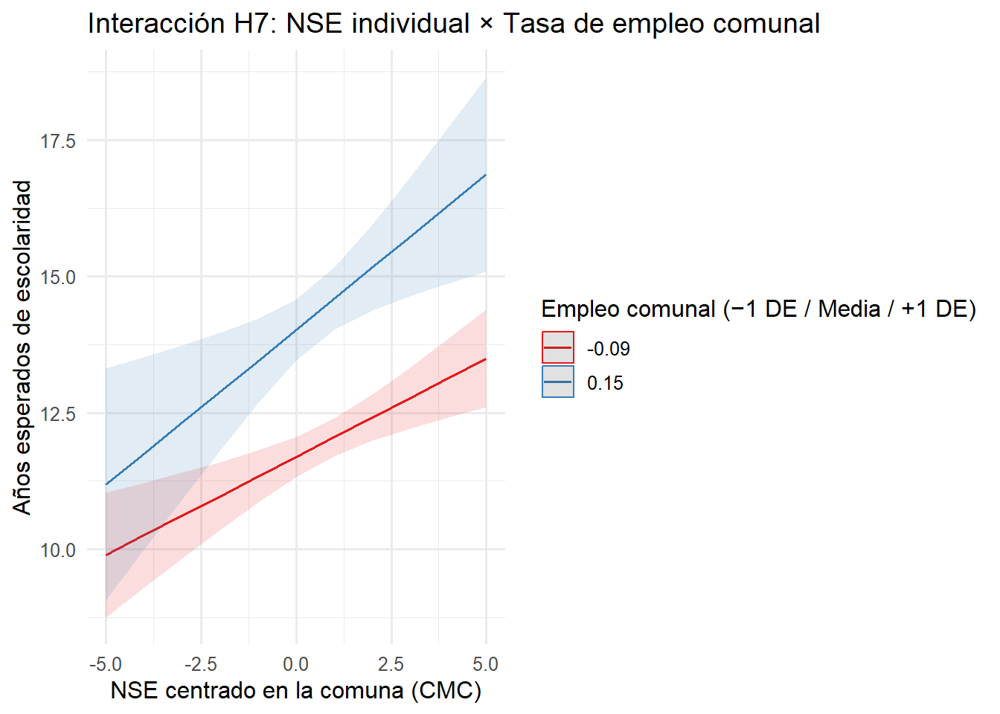
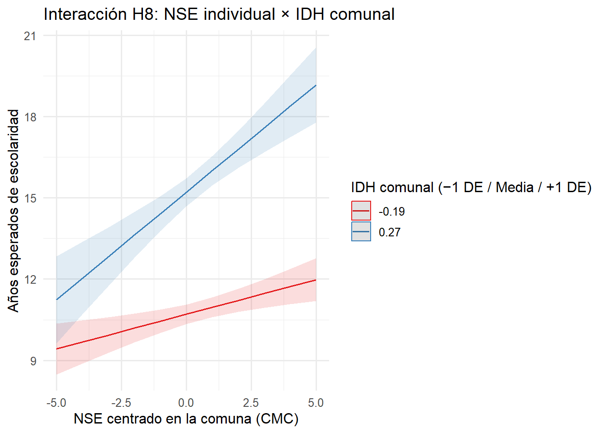
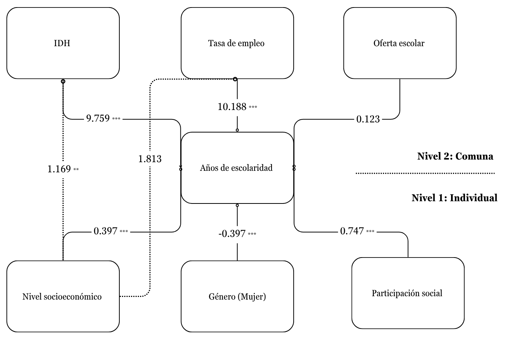

1 Abstract
El ideal meritocrático sostiene que el esfuerzo individual —medido por el logro educativo— debiera traducirse en oportunidades iguales de movilidad social. Este estudio evalúa en qué medida factores ajenos al mérito, tanto familiares (NSE, género, participación social) como territoriales (tasa de empleo, oferta escolar, IDH), condicionan los años de escolaridad en el Gran Santiago. Utilizando microdatos CASEN 2022 (N = 22 706) y modelos multinivel con 32 comunas, hallamos que el capital económico y la inserción social del hogar incrementan significativamente la escolaridad, mientras que ser mujer implica un rezago persistente. A escala comunal, mayor empleo favorece trayectorias más extensas, pero la mera cantidad de escuelas no presenta efecto neto; el IDH se asocia positivamente con la escolaridad y modula los retornos del NSE. Concluimos que la meritocracia educativa opera sobre cimientos desiguales: los logros académicos reflejan tanto esfuerzo como recursos estructurales.
2 Introducción
La persistencia de brechas en años de escolaridad en la Región Metropolitana interroga la promesa meritocrática del sistema escolar y revela mecanismos de reproducción social (MINEDUC, 2023; Agencia de Calidad, 2015; OECD, 2021; Bellei et al., 2008). Entendemos la desigualdad educativa como la distribución desigual de oportunidades de acceso, permanencia y logro, influida por recursos familiares y condiciones territoriales (Bourdieu & Passeron, 2001).
La evidencia ha privilegiado pruebas estandarizadas y descripciones administrativas (Soler & Fernández, 2021; Cimadamore & Cattani, 2008), descuidando cómo se entrelazan factores individuales con estructuras locales (oferta escolar, dinamismo laboral). Este artículo integra un enfoque multinivel para explicar diferencias en escolaridad a partir de la interacción entre hogar y comuna. Nuestra pregunta: ¿hasta qué punto los logros educativos reflejan mérito versus ventajas estructurales del origen y del territorio en el Gran Santiago?
Teóricamente, articulamos: (1) capitales familiares → logros; (2) institucionalización del mérito que naturaliza ventajas; y (3) efectos de contexto (segregación, recursos comunales) que amplifican o atenúan retornos del capital de origen. Empíricamente, incorporamos participación social del hogar y tasa comunal de empleo como mediaciones claves entre integración social, mercado de trabajo y trayectorias formativas (Bullones, 2022; Villalobos & Mardones, 2022), junto al IDH comunal como síntesis de bienestar territorial.
3 Objetivos e hipótesis
Objetivo general. Analizar el rol de la familia y el entorno comunal como espacios de socialización que inciden en los años de escolaridad de los habitantes del Gran Santiago (2022).
Objetivos específicos. (1) Estimar asociaciones entre NSE, género, participación social y escolaridad. (2) Estimar asociaciones entre empleo, oferta escolar, IDH y escolaridad. (3) Evaluar interacciones L1×L2 (retornos diferenciales del NSE según contexto).
Hipótesis multinivel.
Nivel 1 (individual). H1: NSE↑ → escolaridad↑. H2: mujeres < hombres. H3: participación social↑ → escolaridad↑.
Nivel 2 (comunal). H4: empleo↑ → escolaridad↑. H5: escuelas/10 000 hab.↑ → escolaridad↑. H6: IDH↑ → escolaridad↑.
Interacciones. H7: el efecto del NSE es mayor donde el empleo es alto. H8: el efecto del NSE es mayor donde el IDH es alto.
4 Datos, variables y métodos
CASEN 2022 (MDSF): diseño probabilístico estratificado por región/comuna/área. Analizamos 22 706 personas (≥18 años) anidadas en 32 comunas del Gran Santiago.
Variable dependiente. Años de escolaridad (esc), continua; media ≈ 12,6 (DE ≈ 4,1), rango 0–29.
Nivel 1. female (1 = mujer), nse_numerico (1–7), part_social_num (0–…);
Nivel 2. prop_empleo (proporción ocupados), prop_pob_esc (escuelas/10 000 hab.), idh_comuna (0–1).
| Statistic | N | Min | Pctl(25) | Median | Mean | Pctl(75) | Max | St. Dev. |
| esc | 22,706 | 0 | 11 | 12 | 12.60 | 16 | 29 | 4.11 |
| female | 22,706 | 0 | 0 | 1 | 0.54 | 1 | 1 | 0.50 |
| nse_numerico | 22,706 | 1 | 2 | 5 | 4.56 | 6 | 7 | 2.01 |
| part_social_num | 22,706 | 0 | 0 | 0 | 0.13 | 0 | 1 | 0.33 |
| Statistic | N | Min | Pctl(25) | Median | Mean | Pctl(75) | Max | St. Dev. |
| prop_pob_esc | 32 | 1.99 | 2.97 | 3.90 | 3.87 | 4.77 | 6.11 | 1.06 |
| prop_empleo | 32 | 0.46 | 0.51 | 0.54 | 0.55 | 0.58 | 0.70 | 0.06 |
| idh_comuna | 32 | 0.50 | 0.58 | 0.64 | 0.67 | 0.73 | 0.96 | 0.13 |
Métodos. Modelos multinivel con centrado mixto: CMC para nse_numerico por comuna (pendiente interpretable localmente) y GMC para predictores comunales (desviaciones vs. media metropolitana). female y part_social_num sin centrar.
4.1 Modelos
- M0 (nulo/ICC): varianza entre comunas.
- M1 (L1):
female,nse_cmc,part_social_num.
- M2 (L2):
prop_empleo_gmc,prop_pob_esc_gmc,idh_gmc.
- M3 (L1+L2): combina L1 y L2.
- M4:
nse_cmccon pendiente aleatoria por comuna.
- M5 (H7): interacción NSE × empleo.
- M6 (H8): interacción NSE × IDH.
4.2 Descriptivos


4.3 Estimación multinivel
Para la lectura, organizamos la tabla desde M0 a M6. El centrado CMC separa componente dentro de comuna y el GMC ubica los efectos entre comunas. Así, el intercepto es interpretable y las interacciones L1×L2 ganan claridad.
| Nulo (ICC) | M1 (centrado) | M2 (centrado) | M1 + M2 | + Pend. NSE | + Interacción H7 | + Interacción H8 | ||||||||
|---|---|---|---|---|---|---|---|---|---|---|---|---|---|---|
| Predictors | Estimates | std. Error | Estimates | std. Error | Estimates | std. Error | Estimates | std. Error | Estimates | std. Error | Estimates | std. Error | Estimates | std. Error |
| (Intercept) | 12.320 *** | 0.297 | 12.440 *** | 0.295 | 12.562 *** | 0.096 | 12.680 *** | 0.099 | 12.691 *** | 0.099 | 12.689 *** | 0.099 | 12.682 *** | 0.098 |
| female | -0.398 *** | 0.049 | -0.397 *** | 0.049 | -0.398 *** | 0.049 | -0.398 *** | 0.049 | -0.398 *** | 0.049 | ||||
| nse cmc | 0.397 *** | 0.015 | 0.397 *** | 0.015 | 0.421 *** | 0.058 | 0.438 *** | 0.061 | 0.478 *** | 0.053 | ||||
| part social num | 0.744 *** | 0.074 | 0.747 *** | 0.074 | 0.730 *** | 0.073 | 0.730 *** | 0.073 | 0.731 *** | 0.073 | ||||
| prop empleo gmc | 10.325 *** | 1.866 | 10.188 *** | 1.834 | 10.162 *** | 1.686 | 9.711 *** | 1.809 | 10.226 *** | 1.776 | ||||
| prop pob esc gmc | 0.124 | 0.109 | 0.123 | 0.107 | 0.151 | 0.095 | 0.147 | 0.097 | 0.132 | 0.102 | ||||
| idh gmc | 9.840 *** | 0.920 | 9.759 *** | 0.904 | 10.394 *** | 0.822 | 10.368 *** | 0.836 | 9.788 *** | 0.892 | ||||
| nse cmc × prop empleo gmc | 0.869 | 1.092 | ||||||||||||
| nse cmc × idh gmc | 1.169 ** | 0.433 | ||||||||||||
| Random Effects | ||||||||||||||
| σ2 | 14.10 | 13.56 | 14.10 | 13.56 | 13.37 | 13.37 | 13.38 | |||||||
| τ00 | 2.80 comuna | 2.74 comuna | 0.26 comuna | 0.25 comuna | 0.26 comuna | 0.26 comuna | 0.25 comuna | |||||||
| τ11 | 0.08 comuna.nse_cmc | 0.08 comuna.nse_cmc | 0.06 comuna.nse_cmc | |||||||||||
| ρ01 | -0.52 comuna | -0.49 comuna | -0.34 comuna | |||||||||||
| ICC | 0.17 | 0.17 | 0.02 | 0.02 | 0.03 | 0.03 | 0.03 | |||||||
| N | 32 comuna | 32 comuna | 32 comuna | 32 comuna | 32 comuna | 32 comuna | 32 comuna | |||||||
| Observations | 22706 | 22706 | 22706 | 22706 | 22706 | 22706 | 22706 | |||||||
| Marginal R2 / Conditional R2 | 0.000 / 0.166 | 0.032 / 0.195 | 0.144 / 0.159 | 0.176 / 0.191 | 0.187 / 0.215 | 0.184 / 0.212 | 0.182 / 0.206 | |||||||
| * p<0.05 ** p<0.01 *** p<0.001 | ||||||||||||||
Test de devianza (M3 vs M4, pendiente aleatoria NSE): Δ = 256.10 (df = 2), p < .001
Gráficos de interacción


Análisis de casos influyentes

5 Discusión

- Meritocracia condicionada: el NSE y la participación social importan, pero sus retornos dependen del contexto territorial (empleo, IDH).
- Heterogeneidad geográfica: parte sustantiva de la varianza es entre comunas; la pendiente del NSE varía territorialmente.
- Oferta vs. calidad: la densidad de escuelas no implica por sí misma más escolaridad.
6 Conclusiones
Las condiciones familiares y comunales inciden significativamente en la escolaridad adulta del Gran Santiago. Las variables de contexto explican gran parte de la desigualdad entre comunas, mientras que los factores individuales sostienen efectos persistentes. El multinivel permitió separar varianza entre/dentro, modelar pendientes aleatorias e identificar interacciones. Limitaciones: ausencia de medidas de calidad escolar y diseño transversal. Se sugiere extender a otras regiones, sumar métricas de calidad e incorporar trayectorias longitudinales. En política pública, nivelar puntos de partida familiares y territoriales es clave si se busca que el mérito sea la vía predominante de movilidad.
7 Referencias
- Agencia de Calidad de la Educación. (2015). Evolución de las brechas socioeconómicas de rendimiento en pruebas SIMCE.
- Andréu, J. (2011). El análisis multinivel: una revisión actualizada en el ámbito sociológico.
- Arita, M., Romano, A., García, A., & Félix, F. (2015). Condiciones de vida y bienestar subjetivo en Culiacán, México.
- Bellei, C., Contreras, D., & Valenzuela, J.P. (2008). La agenda pendiente en educación.
- Bourdieu, P., & Passeron, J.C. (2001). La reproducción.
- Bullones, E. (2022). Gestión educativa en valores para la paz comunitaria.
- Canales, A., & de Ibarrola, M. (2022). Segmentación del sistema escolar mexicano.
- Castillo, J. (2025). Modelos Multinivel. Sesión 6: Ajuste y Reporte.
- Cimadamore, A.D., & Cattani, A.D. (2008). Producción de pobreza y desigualdad en AL.
- Cortés, Y. (2021). Accesibilidad espacial a servicios públicos y segregación en AMS.
- Finch, W.H., Bolin, J.E., & Kelley, K. (2019). Multilevel modeling using R.
- Giménez, G. (2004). Identidades urbanas.
- Gobierno de Santiago (s.f.). Datos geográficos.
- INEE (2011). PIRLS-TIMSS 2011.
- MDSF (2022). CASEN 2022.
- MINEDUC (2023). Informe SIMCE y brechas socioeconómicas.
- OECD (2021). Education at a Glance.
- Peláez, C., & Rodríguez, S.A. (2020). Género, trabajo y educación.
- Rivas, A., & Terra, V. (2024). Percepciones sobre hábitat urbano informal.
8 Anexos
```{r Anexo 1, echo=FALSE, fig.cap=“Anexo 1: Comparación de modelos con y sin casos influyentes”, results=‘asis’} tab_model(m4, m4_trim, dv.labels = c(“Modelo original”, “Sin comunas influyentes”), show.ci = FALSE, p.style = “stars”, digits = 3)